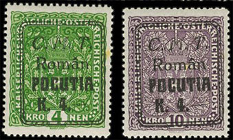

László KÁLLAI, România
|
Supratipar cu textul „C.M.T. Român Pocutia” pe mărcile austiece de 1.20/1 kr., 1.20/2kr, 1.20/3 kr şi 4/4 kr. Mărcile din imagine au făcut parte din colecţie regelui Carol al României. Se cunosc doar două serii complete şi atestate. Supratiparul s-a produs în timpul războiului polono-ucrainean, când forţele armate ale României au ocupat fără lupte regiunea, pe care au predat-o mai apoi autorităţilor poloneze. Pentru aprovizionarea oficiilor poştale din timpul ocupaţiei româneşti au fost folosite timbre austriece. În mai 2006 la licitaţia organizată de Cherrystone, mărcile din imagine au fost vândute cu 16.500 USD.
Pocuţia (în limbile ucraineană: Покуття, poloneză: Pokucie) este o subregiune istorică a Galiţiei, cuprinsă între râurile Prut şi Ceremuş, în zilele noastre parte a Ucrainei. Din punct de vedere istoric, a fost o regiune culturală distinctă, locuită de români şi de ruteni. Centrul istoric al regiunii a fost oraşul Colomeea. Denumirea regiunii poate fi tradusă prin „lângă colţ”, după numele oraşului Kuti, care la rândul lui înseamnă „colţ”. Iniţial, Pocuţia a fost parte a Rusiei Kievene şi mai apoi a unuia dintre statele sale succesoare, Halici-Volînia. Regiunea a fost anexată în 1349 de regele polonez Cazimir al III-lea. Acesta, în căutarea de fonduri necesare continuării războaielor cu Ordinul Cavalerilor Teutoni, a folosit regiunea drept garanţie pentru împrumutul obţinut din partea domnitorului Moldovei Petru I. |
Regiunea a fost disputată între cele două state, deoarece sumele împrumutate de regele polonez nu au fost returnate niciodată în întregime. În 1498, regiunea a fost cucerită de Ştefan cel Mare. În 1531, după bătălia de la Obretin, Pocuţia a fost recucerită de polonezii conduşi de hatmanul Jan Tarnowski, care l-a învins pe domnitorul moldovean Petru Rareş. În urma divizării Poloniei din 1772, Pocuţia a devenit parte a Austriei, fiind încorporată în Regatul Galiţiei şi Lodomeriei. După încheierea primului război mondial şi dizolvarea Austro-Ungariei, Pocuţia a fost disputată de Polonia şi efemerul stat Naţional al Ucrainei Occidentale.În timpul războiului polono-ucrainean,

forţele armate ale României au ocupat fără lupte regiunea, pe care au predat-o mai apoi autorităţilor poloneze. După războiul polono-sovietic, zona a rămas în cadrul Poloniei. Drept urmare a şi partiţiei Poloniei din 1939 între Germania Nazistă şi Uniunea Sovietică, Pocuţia a fost încorporată în RSS Ucraineană, pentru ca, mai apoi, după declanşarea Operaţiunii Barbarossa, zona să ajungă sub stăpânirea germană. După eliberarea ei de Armata Roşie, zona a rămas în cadrul RSS Ucraineene, iar, în momentul de faţă face parte din regiunea Ivano-Frankovsk, Ucraina. (Surse: Wikipedia, Cherrystone)
|